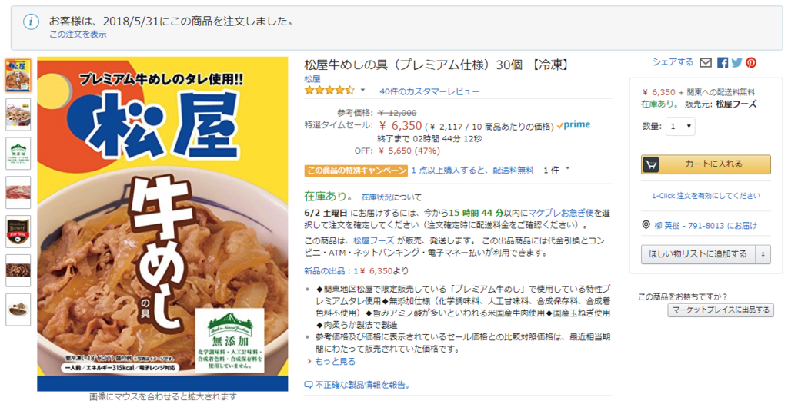

6月1日：松屋の冷凍牛丼を半額でゲット＋業務改善のためのスクリプト
公開日：
今日は仕事を休む日。ここ1カ月は慣れない実家の机で仕事をしていたせいか、ちょっと疲弊してるので、たまったタスクをこなしながらのんびりしようかと思う。今朝は業務改善のために Slack の設定を見直したり、Microsoft Flow を組んだりしてたけど、結構楽しかった。
んで、ちょっと Microsoft Flow で躓いたのだけど、あまりお行儀のよくないフィードを読むと［プライマリリンク］が記事へのリンクになっていないときがある。Microsoft Flow は便利だが、こういうイレギュラーへの対応がちょっと面倒くさいな。
とりあえず文字列の［変数］を用意してリンク配列の foreach でバラしてぶち込み*1、それを使うことにした。途中、改行の挿入はどうすればいいんだ？ って思ってググったけど、自分のサイトがヒットした。なんでもメモを取っておくものだと思った。
あと、常備してた松屋の冷凍牛丼を切らしていたので Amazon で追加注文をしようと思ったのだけど、フツーのお値段だと1袋400円もするらしい。そんなに出すなら食べに行くがな！

――というわけで、更新スクリプトを回して価格を監視したら、なんかその日のうちにセールで半額になった。日頃の行いが良すぎるせいか……ビックリやで。早速注文したけど、明日には来るらしい。ついでにレトルトのカレーとか、パソコンで TV 見るためのチューナーとか買った。あと、安かったらうれしいなーと思った商品へ片っ端に監視をかけておいた。
ちなみに、冷凍牛丼はあっためて生卵とネギ*2をぶち込んでそのまま食べるのはもちろん、工夫次第で割と色々使える。思い切って出汁を切っちゃえば、肉じゃがとか、冷やしうどんの具とか、牛肉カレーとか……まぁ、そんな感じ。味が付きすぎていてアレンジが効きにくいのが難点*3で、油断したらなんでも牛丼味になっちゃうけど、あんまり手間をかけずに料理するときのベースに使えるので、一袋200円ちょいなら確保しておく価値あるかな。吉野家・すき家も同じようなのを出してると思うけど、ずっと前に比べたときは確か松屋が一番安かった気がする。今はどうなんだろ……？